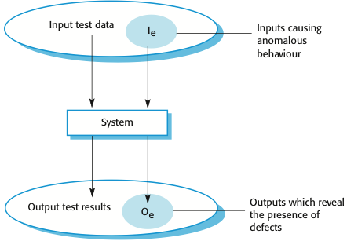
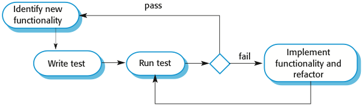

CS 410/510 - Software Engineering
Software Testing
Reference: Sommerville, Software Engineering, 10 ed., Chapter 8
The big picture
Testing is intended to show that a program does what it is intended to do and to discover program defects before it is put into use. When you test software, you execute a program using artificial data. You check the results of the test run for errors, anomalies or information about the program's non-functional attributes. Testing can reveal the presence of errors, but NOT their absence. Testing is part of a more general verification and validation process, which also includes static validation techniques.
Goals of software testing:
Testing can be viewed as an input-output process:

Verification and validation
Testing is part of a broader process of software verification and validation (V & V).
The goal of V & V is to establish confidence that the system is good enough for its intended use, which depends on:
Inspections and testing
Software inspections involve people examining the source representation with the aim of discovering anomalies and defects. Inspections not require execution of a system so may be used before implementation. They may be applied to any representation of the system (requirements, design,configuration data, test data, etc.). They have been shown to be an effective technique for discovering program errors.
Advantages of inspections include:
Inspections and testing are complementary and not opposing verification techniques. Both should be used during the V & V process. Inspections can check conformance with a specification but not conformance with the customer's real requirements. Inspections cannot check non-functional characteristics such as performance, usability, etc.
Typically, a commercial software system has to go through three stages of testing:
Development testing
Development testing includes all testing activities that are carried out by the team developing the system:
Unit testing
Unit testing is the process of testing individual components in isolation. It is a defect testing process. Units may be:
When testing object classes, tests should be designed to provide coverage of all of the features of the object:
Whenever possible, unit testing should be automated so that tests are run and checked without manual intervention. In automated unit testing, you make use of a test automation framework (such as JUnit) to write and run your program tests. Unit testing frameworks provide generic test classes that you extend to create specific test cases. They can then run all of the tests that you have implemented and report, often through some GUI, on the success of otherwise of the tests. An automated test has three parts:
The test cases should show that, when used as expected, the component that you are testing does what it is supposed to do. If there are defects in the component, these should be revealed by test cases. This leads to two types of unit test cases:
Component testing
Software components are often composite components that are made up of several interacting objects. You access the functionality of these objects through the defined component interface. Testing composite components should therefore focus on showing that the component interface behaves according to its specification. Objectives are to detect faults due to interface errors or invalid assumptions about interfaces. Interface types include:
Interface errors:
General guidelines for interface testing:
System testing
System testing during development involves integrating components to create a version of the system and then testing the integrated system. The focus in system testing is testing the interactions between components. System testing checks that components are compatible, interact correctly and transfer the right data at the right time across their interfaces. System testing tests the emergent behavior of a system.
During system testing, reusable components that have been separately developed and off-the-shelf systems may be integrated with newly developed components. The complete system is then tested. Components developed by different team members or sub-teams may be integrated at this stage. System testing is a collective rather than an individual process.
The use cases developed to identify system interactions can be used as a basis for system testing. Each use case usually involves several system components so testing the use case forces these interactions to occur. The sequence diagrams associated with the use case document the components and their interactions that are being tested.
Test-driven development
Test-driven development (TDD) is an approach to program development in which you inter-leave testing and code development. Tests are written before code and 'passing' the tests is the critical driver of development. This is a differentiating feature of TDD versus writing unit tests after the code is written: it makes the developer focus on the requirements before writing the code. The code is developed incrementally, along with a test for that increment. You don't move on to the next increment until the code that you have developed passes its test. TDD was introduced as part of agile methods such as Extreme Programming. However, it can also be used in plan-driven development processes.
TDD example - a string calculator.
The goal of TDD isn't to ensure we write tests by writing them first, but to produce working software that achieves a targeted set of requirements using simple, maintainable solutions. To achieve this goal, TDD provides strategies for keeping code working, simple, relevant, and free of duplication.

TDD process includes the following activities:
Benefits of test-driven development:
Regression testing is testing the system to check that changes have not 'broken' previously working code. In a manual testing process, regression testing is expensive but, with automated testing, it is simple and straightforward. All tests are rerun every time a change is made to the program. Tests must run 'successfully' before the change is committed.
Release testing
Release testing is the process of testing a particular release of a system that is intended for use outside of the development team. The primary goal of the release testing process is to convince the customer of the system that it is good enough for use. Release testing, therefore, has to show that the system delivers its specified functionality, performance and dependability, and that it does not fail during normal use. Release testing is usually a black-box testing process where tests are only derived from the system specification.
Release testing is a form of system testing. Important differences:
Requirements-based testing involves examining each requirement and developing a test or tests for it. It is validation rather than defect testing: you are trying to demonstrate that the system has properly implemented its requirements.
Scenario testing is an approach to release testing where you devise typical scenarios of use and use these to develop test cases for the system. Scenarios should be realistic and real system users should be able to relate to them. If you have used scenarios as part of the requirements engineering process, then you may be able to reuse these as testing scenarios.
Part of release testing may involve testing the emergent properties of a system, such as performance and reliability. Tests should reflect the profile of use of the system. Performance tests usually involve planning a series of tests where the load is steadily increased until the system performance becomes unacceptable. Stress testing is a form of performance testing where the system is deliberately overloaded to test its failure behavior.
User testing
User or customer testing is a stage in the testing process in which users or customers provide input and advice on system testing. User testing is essential, even when comprehensive system and release testing have been carried out. Types of user testing include:
In agile methods, the user/customer is part of the development team and is responsible for making decisions on the acceptability of the system. Tests are defined by the user/customer and are integrated with other tests in that they are run automatically when changes are made. Main problem here is whether or not the embedded user is 'typical' and can represent the interests of all system stakeholders.